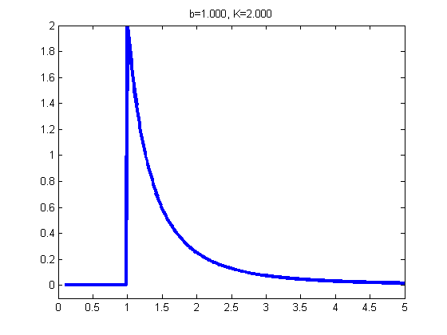
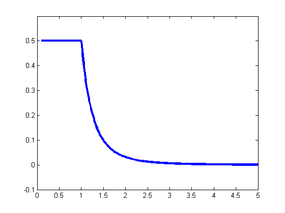

Pareto Taxicab Example
function paretoDemoTaxicab()
as = 0.1:0.01:5;
bs = [1, 1, 1, 0.001];
Ks = [2, 1, 0.1, 0.001];
figure();
b=1;
K=2;
model.m = b;
model.K = K;
ps = exp(paretoLogprob(model, as));
plot(as, ps, 'linewidth', 3)
set(gca, 'ylim', [-0.1 2])
title(sprintf('b=%5.3f, K=%5.3f', b, K))
printPmtkFigure pareto-pdf-1-2

figure();
ms = as;
b=1;
K=2;
ev = zeros(1, length(ms));
for mi=1:length(ms)
D = [0, ms(mi)];
ev(mi) = paretoEvidence(D, b, K);
end
plot(ms, ev, 'linewidth', 3)
plot(ms, ev, 'linewidth', 3)
set(gca, 'ylim', [-0.1 0.6])
printPmtkFigure pareto-evidence
return;
for i=1:4
subplot(2,2,i)
K = Ks(i);
b = bs(i);
model.m = b;
model.K = K;
ps = exp(paretoLogprob(model, as));
plot(as, ps, 'linewidth', 3)
axis tight
set(gca, 'ylim', [-0.1 2])
title(sprintf('b=%5.3f, K=%5.3f', b, K))
end
figure();
ms = as;
N = 2;
for i=1:4
subplot(2,2,i)
K = Ks(i);
b = bs(i);
for mi=1:length(ms)
D = [0, ms(mi)];
ev(mi) = paretoEvidence(D, b, K);
end
plot(ms, ev, 'linewidth', 3)
axis tight
set(gca, 'ylim', [-0.1 0.6])
title(sprintf('b=%5.3f, K=%5.3f', b, K))
end
function ev = paretoEvidence(D, b, K)
m = max(D);
N = length(D);
if m <= b
ev = K/( (N+K) * b^N );
else
ev = (K * b^K)/( (N+K).*m.^(N+K));
end
function ev = paretoEvidence2(m, N, b, K)
ev = zeros(1, N);
ndx = find(m <= b);
ev(ndx) = K/( (N+K) * b^N );
ndx = find(m < b);
ev(ndx) = (K * b^K)/( (N+K).*m(ndx).^(N+K));
